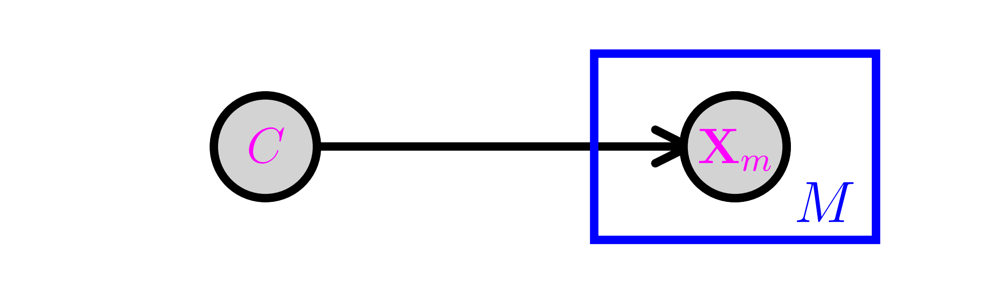

\(\newcommand{\bmu}{\boldsymbol{\mu}}\) \(\newcommand{\bSigma}{\boldsymbol{\Sigma}}\) \(\newcommand{\bfbeta}{\boldsymbol{\beta}}\) \(\newcommand{\bflambda}{\boldsymbol{\lambda}}\) \(\newcommand{\bgamma}{\boldsymbol{\gamma}}\) \(\newcommand{\bsigma}{{\boldsymbol{\sigma}}}\) \(\newcommand{\bpi}{\boldsymbol{\pi}}\) \(\newcommand{\btheta}{{\boldsymbol{\theta}}}\) \(\newcommand{\bphi}{\boldsymbol{\phi}}\) \(\newcommand{\balpha}{\boldsymbol{\alpha}}\) \(\newcommand{\blambda}{\boldsymbol{\lambda}}\) \(\renewcommand{\P}{\mathbb{P}}\) \(\newcommand{\E}{\mathbb{E}}\) \(\newcommand{\indep}{\perp\!\!\!\perp} \newcommand{\bx}{\mathbf{x}}\) \(\newcommand{\bp}{\mathbf{p}}\) \(\renewcommand{\bx}{\mathbf{x}}\) \(\newcommand{\bX}{\mathbf{X}}\) \(\newcommand{\by}{\mathbf{y}}\) \(\newcommand{\bY}{\mathbf{Y}}\) \(\newcommand{\bz}{\mathbf{z}}\) \(\newcommand{\bZ}{\mathbf{Z}}\) \(\newcommand{\bw}{\mathbf{w}}\) \(\newcommand{\bW}{\mathbf{W}}\) \(\newcommand{\bv}{\mathbf{v}}\) \(\newcommand{\bV}{\mathbf{V}}\) \(\newcommand{\bfg}{\mathbf{g}}\) \(\newcommand{\bfh}{\mathbf{h}}\) \(\newcommand{\horz}{\rule[.5ex]{2.5ex}{0.5pt}}\) \(\renewcommand{\S}{\mathcal{S}}\) \(\newcommand{\X}{\mathcal{X}}\) \(\newcommand{\var}{\mathrm{Var}}\) \(\newcommand{\pa}{\mathrm{pa}}\) \(\newcommand{\Z}{\mathcal{Z}}\) \(\newcommand{\bh}{\mathbf{h}}\) \(\newcommand{\bb}{\mathbf{b}}\) \(\newcommand{\bc}{\mathbf{c}}\) \(\newcommand{\cE}{\mathcal{E}}\) \(\newcommand{\cP}{\mathcal{P}}\) \(\newcommand{\bbeta}{\boldsymbol{\beta}}\) \(\newcommand{\bLambda}{\boldsymbol{\Lambda}}\) \(\newcommand{\cov}{\mathrm{Cov}}\) \(\newcommand{\bfk}{\mathbf{k}}\) \(\newcommand{\idx}[1]{}\) \(\newcommand{\xdi}{}\)
6.3. Modeling more complex dependencies 1: using conditional independence#
In this section, we discuss the first of two standard techniques for constructing joint distributions from simpler building blocks: (1) imposing conditional independence relations and (2) marginalizing out an unobserved random variable. Combining them produces a large class of models known as probabilistic graphical models, which we do not discuss in generality. As before, we make our rigorous derivations in the finite support case, but these can be adapted to the continuous or hybrid cases.
6.3.1. Review of conditioning#
We first review the concept of conditioning, which generally plays a key role in probabilistic modeling and reasoning.
Conditional probability We start with events. Throughout, we work on a fixed probability space \((\Omega, \mathcal{F}, \P)\), which we assume is discrete, i.e., the number of elements in \(\Omega\) is countable.
DEFINITION (Conditional Probability) \(\idx{conditional probability}\xdi\) Let \(A\) and \(B\) be two events with \(\mathbb{P}[B] > 0\). The conditional probability of \(A\) given \(B\) is defined as
\(\natural\)
The intuitive interpretation goes something like this: knowing that event \(B\) has occurred, the updated probability of observing \(A\) is the probability of its restriction to \(B\) properly normalized to reflect that outcomes outside \(B\) have updated probability \(0\).
Conditional probabilities generally behave like “unconditional” probabilities.
Independence can be characterized in terms of conditional probability. In words, \(A\) and \(B\) are independent if conditioning on one of them having taken place does not change the probability of the other occurring.
LEMMA Let \(A\) and \(B\) be two events of positive probability. Then \(A\) and \(B\) are independent, which we will denote as \(A \indep B\), if and only if \(\P[A|B] = \P[A]\) and \(\P[B|A] = \P[B]\). \(\flat\)
Proof: If \(A\) and \(B\) are independent, then c which implies
In the other direction,
implies \(\P[A|B] = \frac{\P[A \cap B]}{\P[B]}\) after rearranging. \(\square\)
The conditional probability is often used in three fundamental ways, which we recall next. Proofs can be found in most probability textbooks.
Multiplication Rule: \(\idx{multiplication rule}\xdi\) For any collection of events \(A_1,\ldots,A_r\),
Law of Total Probability: \(\idx{law of total probability}\xdi\) For any event \(B\) and any partition\(\idx{partition}\xdi\) \(A_1,\ldots,A_r\) of \(\Omega\),
Bayes’ Rule: \(\idx{Bayes' yule}\xdi\) For any events \(A\) and \(B\) with positive probability,
It is implicit that all formulas above hold provided all conditional probabilities are well-defined.
Conditioning on a random variable Conditional probabilities extend naturally to random variables. If \(X\) is a discrete random variable, we let \(p_X\) be its probability mass function and \(\S_X\) be its support, that is, the set of values where it has positive probability. Then we can for instance condition on the event \(\{X = x\}\) for any \(x \in \S_X\).
We define next the conditional probability mass function.
DEFINITION (Conditional Probability Mass Function) Let \(X\) and \(Y\) be discrete random variables with joint probability mass function \(p_{X, Y}\) and marginals \(p_X\) and \(p_Y\). The conditional probability mass function\(\idx{conditional probability mass function}\xdi\) of \(X\) given \(Y\) is defined as
which is defined for all \(x \in \S_X\) and \(y \in \S_Y\). \(\natural\)
The conditional expectation can then be defined in a natural way as the expectation over the conditional probability mass function.
DEFINITION (Conditional Expectation) \(\idx{conditional expectation}\xdi\) Let \(X\) and \(Y\) be discrete random variables where \(X\) takes real values and has a finite mean. The conditional expectation of \(X\) given \(Y = y\) is given by
\(\natural\)
More generally, for a function \(f\) over the range of \(X\), we can define
We mention one useful formula: the Law of Total Expectation\(\idx{law of total expectation}\xdi\), the expectation version of the Law of Total Probability. It reads
Conditional expectation as least-squares estimator Thinking of \(\E[X|Y=y]\) as a function of \(y\) leads to a fundamental characterization of the conditional expectation.
THEOREM Let \(X\) and \(Y\) be discrete random variables where \(X\) takes real values and has a finite variance. Then the conditional expectation \(h(y) = \E[X|Y=y]\) minimizes the least squares criterion
where the minimum is over all real-valued functions of \(y\). \(\sharp\)
Proof: Think of \(h(y)\) as a vector \(\mathbf{h} = (h_y)_{y \in \S_Y}\), indexed by \(\S_Y\) (which is countable by assumption), with \(h_y = h(y) \in \mathbb{R}\). Then
Expanding the sum in the square brackets (which we denote \(q_y\) and think of as a function of \(h_y\)) gives
By the Miminizing a Quadratic Function Lemma, the unique global minimum of \(q_y(h_y)\) - provided \(p_Y(y) > 0\) - is attained at
After rearranging, we get
as claimed. \(\square\)
Conditional independence We begin with the definition.
DEFINITION (Conditional Independence) \(\idx{conditional independence}\xdi\) Let \(A, B, C\) be events such that \(\P[C] > 0\). Then \(A\) and \(B\) are conditionally independent given \(C\), denoted \(A \indep B | C\), if
\(\natural\)
In words, quoting Wikipedia:
\(A\) and \(B\) are conditionally independent given \(C\) if and only if, given knowledge that \(C\) occurs, knowledge of whether \(A\) occurs provides no information on the likelihood of \(B\) occurring, and knowledge of whether \(B\) occurs provides no information on the likelihood of \(A\) occurring.
In general, conditionally independent events are not (unconditionally) independent.
EXAMPLE: Imagine I have two six-sided dice. Die 1 has faces \(\{1,3,5,7,9,11\}\) and die 2 has faces \(\{2, 4, 6, 8, 10, 12\}\). Suppose I perform the following experiment: I pick one of the two dice uniformly at random, and then I roll that die twice. Let \(X_1\) and \(X_2\) be the outcomes of the rolls. Consider the events \(A = \{X_1 = 1\}\), \(B = \{X_2 = 2\}\), and \(C = \{\text{die 1 is picked}\}\). The events \(A\) and \(B\) are clearly dependent: if \(A\) occurs, then I know that die 1 was picked, and hence \(B\) cannot occur. Knowledge of one event provides information about the likelihood of the other event occurring. Formally, by the law of total probability,
Similarly \(\P[B] = \frac{1}{12}\). Yet \(\P[A \cap B] = 0 \neq \frac{1}{12} \frac{1}{12}\).
On the other hand, we claim that \(A\) and \(B\) are conditionally independent given \(C\). Again this is intuitively clear: once I pick a die, the two rolls are independent. For a given die choice, knowledge of one roll provides no information about the likelihood of the other roll. Note that the phrase “for a given die choice” is critical in the last statement. Formally, by our experiment, we have \(\P[A|C] = 1/6\), \(\P[B|C] = 0\) and \(\P[A \cap B|C] = 0\). So indeed
as claimed. \(\lhd\)
See the exercises for further instances of the important principle that conditional probabilities satisfy the same rules as probabilities.
Conditional independence is naturally extended to random vectors.
DEFINITION (Conditional Independence of Random Vectors) Let \(\bX, \bY, \bW\) be discrete random vectors. Then \(\bX\) and \(\bY\) are said to be conditionally independent given \(\bW\), denoted \(\bX \indep \bY | \bW\), if for all \(\bx \in \S_\bX\), \(\by \in \S_\bY\) and \(\bw \in \S_\bW\)
\(\natural\)
An important consequence is that we can drop the conditioning by the independent variable.
LEMMA (Role of Independence) \(\idx{role of independence lemma}\xdi\) Let \(\bX, \bY, \bW\) be discrete random vectors such that \(\bX \indep \bY | \bW\). For all \(\bx \in \S_\bX\), \(\by \in \S_\bY\) and \(\bw \in \S_\bW\),
\(\flat\)
Proof: In a previous exercise, we showed that \(A \indep B | C\) implies \(\P[A | B\cap C] = \P[A | C]\). That implies the claim. \(\square\)
CHAT & LEARN The concept of conditional independence is closely related to the concept of d-separation in probabilistic graphical models. Ask your favorite AI chatbot to explain d-separation and how it can be used to determine conditional independence relationships in a directed acyclic graph. \(\ddagger\)
6.3.2. The basic configurations#
A powerful approach for constructing complex probability distributions is the use of conditional independence. The case of three random variables exemplifies key probabilistic relationships. By the product rule, we can write
This is conveniently represented through a digraph where the vertices are the variables. Recall that an arrow \((i,j)\), from \(i\) to \(j\), indicates that \(i\) is a parent of \(j\) and that \(j\) is a child of \(i\). Let \(\pa(i)\) be the set of parents of \(i\). The digraph \(G = (V, E)\) below encodes the following sampling scheme, referred as ancestral sampling:
First we pick \(X\) according to its marginal \(\P[X=x]\). Note that \(X\) has no parent in \(G\).
Second we pick \(Y\) according to the CPD \(\P[Y=y|X=x]\). Note that \(X\) is the only parent of \(Y\).
Finally we pick \(Z\) according to the CPD \(\P[Z=z|X=x, Y=y]\). Note that the parents of \(Z\) are \(X\) and \(Y\).
The graph above is acyclic, that is, it has no directed cycle. The variables \(X, Y, Z\) are in topological order\(\idx{topological order}\xdi\), that is, all edges \((i,j)\) are such that \(i\) comes before \(j\) in that order.
The same joint distribution can be represented by a different digraph if the product rule is used in a different order. For instance,
is represented by the following digraph. A topological order this time is \(Z, Y, X\).
The fork \(\idx{fork}\xdi\) Removing edges in the first graph above encodes conditional independence relations. For instance, removing the edge from \(Y\) to \(Z\) gives the following graph, known as a fork. We denote this configuration as \(Y \leftarrow X \rightarrow Z\).
The joint distribution simplifies as follows:
So, in this case, what has changed is that the CPD of \(Z\) does not depend on the value of \(Y\). From the Role of Independence lemma, this corresponds to assuming the conditional independence \(Z \indep Y|X\). Indeed, we can check that claim directly from the joint distribution
as claimed.
The chain \(\idx{chain}\xdi\) Removing the edge from \(X\) to \(Z\) gives the following graph, known as a chain (or pipe). We denote this configuration as \(X \rightarrow Y \rightarrow Z\).
The joint distribution simplifies as follows:
In this case, what has changed is that the CPD of \(Z\) does not depend on the value of \(X\). Compare that to the fork. The corresponding conditional independence relation is \(Z \indep X|Y\). Indeed, we can check that claim directly
Now we have to use Bayes’ Rule to get
as claimed.
For any \(x, y, z\) where the joint probability is positive, we can re-write
where we used that
by definition of the conditional probability. In other words, we have shown that the chain \(X \rightarrow Y \rightarrow Z\) is in fact equivalent to the fork \(X \leftarrow Y \rightarrow Z\). In particular, they both correspond to assuming the conditional independence relation \(Z \indep X|Y\), although they capture a different way to sample the joint distribution.
The collider \(\idx{collider}\xdi\) Removing the edge from \(X\) to \(Y\) gives the following graph, known as a collider. We denote this configuration as \(X \rightarrow Z \leftarrow Y\).
The joint distribution simplifies as follows:
In this case, what has changed is that the CPD of \(Y\) does not depend on the value of \(X\). Compare that to the fork and the chain. This time we have \(X \indep Y\). Indeed, we can check that claim directly
as claimed. In particular, the collider cannot be reframed as a chain or fork as its underlying assumption is stronger.
Perhaps counter-intuitively, conditioning on \(Z\) makes \(X\) and \(Y\) dependent in general. This is known as explaining away or Berkson’s Paradox.
6.3.3. Example: Naive Bayes#
The model-based justification we gave for logistic regression in the subsection on generalized linear models used a so-called discriminative approach\(\idx{discriminative model}\xdi\), where the conditional distribution of the target \(y\) given the features \(\mathbf{x}\) is specified – but not the full distribution of the data \((\mathbf{x}, y)\). Here we give an example of the generative approach\(\idx{generative model}\xdi\), which models the full distribution. For a discussion of the benefits and drawbacks of each approach, see for example here.
The Naive Bayes\(\idx{Naive Bayes}\xdi\) model is a simple discrete model for supervised learning. It is useful for document classification for instance, and we will use that terminology here to be concrete. We assume that a document has a single topic \(C\) from a list \(\mathcal{C} = \{1, \ldots, K\}\) with probability distribution \(\pi_k = \P[C = k]\). There is a vocabulary of size \(M\) and we record the presence or absence of a word \(m\) in the document with a Bernoulli variable \(X_m \in \{0,1\}\), where \(p_{k,m} = \P[X_m = 1|C = k]\). We denote by \(\bX = (X_1, \ldots, X_M)\) the corresponding vector.
The conditional independence assumption comes next: we assume that, given a topic \(C\), the word occurrences are independent. That is,
Finally, the joint distribution is
Graphically, this is similar to a fork with \(C\) at its center and \(M\) prongs for the \(X_m\)s. This is represented using the so-called plate notation. The box with the \(M\) in the corner below indicates that \(X_m\) is repeated \(M\) times, all copies being conditionally independent given \(C\).

Model fitting Before using the model for prediction, one must first fit the model from training data \(\{\bx_i, c_i\}_{i=1}^n\). In this case, it means estimating the unknown parameters \(\bpi\) and \(\{\bp_k\}_{k=1}^K\), where \(\bp_k = (p_{k,1},\ldots, p_{k,M})\). For each \(k, m\) let
We use maximum likelihood estimation which, recall, entails finding the parameters that maximize the probability of observing the data
Here, as usual, we assume that the samples are independent and identically distributed. We take a logarithm to turn the products into sums and consider the negative log-likelihood (NLL)
The NLL can be broken up naturally into several terms that depend on different sets of parameters – and therefore can be optimized separately. First, there is a term that depends only on the \(\pi_k\)’s
The rest of the sum can be further split into \(KM\) terms, each depending only on \(p_{km}\) for a fixed \(k\) and m
So
We minimize these terms separately. We assume that \(N_k > 0\) for all \(k\).
We use a special case of maximum likelihood estimation, which we previously worked out in an example, where we consider the space of all probability distributions over a finite set. The maximum likelihood estimator in that case is given by the empirical frequencies. Notice that minimizing \(J_0(\bpi; \{\bx_i, c_i\})\) is precisely of this form: we observe \(N_k\) samples from class \(k\) and we seek the maximum likelihood estimator of, \(\pi_k\), the probability of observing \(k\). Hence the solution is simply
for all \(k\). Similarly, for each \(k\), \(m\), \(J_{k,m}\) is of that form as well. Here the states correspond to word \(m\) being present or absent in a document of class \(k\), and we observe \(N_{k,m}\) documents of type \(k\) where the word \(m\) is present. So the solution is
for all \(k, m\).
Prediction To predict the class of a new document, it is natural to maximize over \(k\) the probability that \(\{C=k\}\) given \(\{\bX = \bx\}\). By Bayes’ rule,
As the denominator does not in fact depend on \(k\), maximizing \(\P[C=k | \bX = \bx]\) boils down to maximizing the numerator \(\pi_k \prod_{m=1}^M p_{k,m}^{x_m} (1-p_{k,m})^{1-x_m}\), which is straighforward to compute. Since the parameters are unknown, we use \(\hat{\pi}_k\) and \(\hat{p}_{k,m}\) in place of \(\pi_k\) and \(p_{k,m}\). As we did previously, we take a negative logarithm – which has some numerical advantages – and we refer to it as the score
More specifically, taking a negative logarithm turns out to be a good idea here because computing a product of probabilities can produce very small numbers that, when they fall beneath machine precision, are approximated by zero. This is called underflow\(\idx{underflow}\xdi\). By taking a negative logarithm, these probabilities are transformed into positive numbers of reasonable magnitude and the product becomes of sum of these. Moreover, because this transformation is monotone, we can use the transformed values directly to compute the optimal score, which is our ultimate goal in the prediction step.
CHAT & LEARN Ask your favorite AI chatbot for more information on the issue of underflow, and its cousin overflow\(\idx{overflow}\xdi\), in particular in the context of multiypling probabilities. \(\ddagger\)
While maximum likehood estimation has desirable theoretical properties, it does suffer from overfitting. If for instance a particular word \(m\) does not occur in any training document, then the probability of observing a new document that happens to contain that word is estimated to be \(0\) for any class (i.e., \(\hat{p}_{k,m} = 0\) for all \(k\) so that \(\hat \pi_k \prod_{m=1}^M \hat{p}_{k,m}^{x_m} (1-\hat{p}_{k,m})^{1-x_m} = 0\) for all \(k\) ) and the maximization problem above is not well-defined.
One approach to deal with this is Laplace smoothing\(\idx{Laplace smoothing}\xdi\)
where \(\alpha, \beta > 0\), which can be justified using a Bayesian or regularization perspective.
We implement the Naive Bayes model with Laplace smoothing.
We encode the data into a table, where the rows are the classes and the columns are the features. The entries are the corresponding \(N_{k,m}\)s. In addition we provide the vector \(N_k\), which is the last column above, and the value \(N\), which is the sum of the entries of \(N_k\).
def nb_fit_table(N_km, alpha=1., beta=1.):
K, M = N_km.shape
N_k = np.sum(N_km,axis=-1)
N = np.sum(N_k)
pi_k = (N_k+alpha) / (N+K*alpha)
p_km = (N_km+beta) / (N_k[:,None]+2*beta)
return pi_k, p_km
The next function computes the negative logarithm of \(\pi_k \prod_{m=1}^M p_{k,m}^{x_m} (1-p_{k,m})^{1-x_m}\), that is, the score of \(k\), and outputs a \(k\) achieving the minimum score.
def nb_predict(pi_k, p_km, x, label_set):
K = len(pi_k)
score_k = np.zeros(K)
for k in range(K):
score_k[k] -= np.log(pi_k[k])
score_k[k] -= np.sum(x * np.log(p_km[k,:])
+ (1 - x)*np.log(1 - p_km[k,:]))
return label_set[np.argmin(score_k, axis=0)]
NUMERICAL CORNER: We use a simple example from Towards Data Science:
Example: let’s say we have data on 1000 pieces of fruit. The fruit being a Banana, Orange or some other fruit and imagine we know 3 features of each fruit, whether it’s long or not, sweet or not and yellow or not, as displayed in the table below.
Fruit |
Long |
Sweet |
Yellow |
Total |
|---|---|---|---|---|
Banana |
400 |
350 |
450 |
500 |
Orange |
0 |
150 |
300 |
300 |
Other |
100 |
150 |
50 |
200 |
Total |
500 |
650 |
800 |
1000 |
[…] Which should provide enough evidence to predict the class of another fruit as it’s introduced.
N_km = np.array([[400., 350., 450.],
[0., 150., 300.],
[100., 150., 50.]])
We run nb_fit_table on our simple dataset.
pi_k, p_km = nb_fit_table(N_km)
print(pi_k)
[0.61495136 0.23092678 0.15412186]
print(p_km)
[[0.33361065 0.29201331 0.37520799]
[0.00221239 0.3340708 0.6659292 ]
[0.33443709 0.5 0.16887417]]
Continuing on with our previous example:
So let’s say we’re given the features of a piece of fruit and we need to predict the class. If we’re told that the additional fruit is Long, Sweet and Yellow, we can classify it using the [prediction] formula and subbing in the values for each outcome, whether it’s a Banana, an Orange or Other Fruit. The one with the highest probability (score) being the winner.
We run nb_predict on our dataset with the additional fruit from the quote above.
label_set = ['Banana', 'Orange', 'Other']
x = np.array([1., 1., 1.])
nb_predict(pi_k, p_km, x, label_set)
'Banana'
\(\unlhd\)
CHAT & LEARN Laplace smoothing is a special case of a more general technique known as Bayesian parameter estimation. Ask your favorite AI chatbot to explain Bayesian parameter estimation and how it relates to maximum likelihood estimation and Laplace smoothing. \(\ddagger\)
Self-assessment quiz (with help from Claude, Gemini, and ChatGPT)
1 Which of the following statements is not true about conditional probability?
a) \(P[A|B] = \frac{P[A \cap B]}{P[B]}\) for events \(A\) and \(B\) with \(P[B] > 0\).
b) If \(A\) and \(B\) are independent, then \(P[A|B] = P[A]\).
c) Conditional probabilities can be used to express the multiplication rule and the law of total probability.
d) \(P[A|B] = P[B|A]\) for any events \(A\) and \(B\).
2 Which of the following is the correct mathematical expression for the conditional independence of events \(A\) and \(B\) given event \(C\), denoted as \(A \perp\!\!\!\perp B \mid C\)?
a) \(P[A \cap B \mid C] = P[A \mid C] + P[B \mid C]\)
b) \(P[A \cup B \mid C] = P[A \mid C] P[B \mid C]\)
c) \(P[A \cap B \mid C] = P[A \mid C] P[B \mid C]\)
d) \(P[A \mid B \cap C] = P[A \mid C]\)
3 In the fork configuration \(Y \leftarrow X \rightarrow Z\), which of the following conditional independence relations always holds?
a) \(X \perp\!\!\!\perp Y \mid Z\)
b) \(Y \perp\!\!\!\perp Z \mid X\)
c) \(X \perp\!\!\!\perp Z \mid Y\)
d) \(Y \perp\!\!\!\perp Z\)
4 In the collider configuration \(X \rightarrow Z \leftarrow Y\), which of the following conditional independence relations always holds?
a) \(X \perp\!\!\!\perp Y \mid Z\)
b) \(Y \perp\!\!\!\perp Z \mid X\)
c) \(X \perp\!\!\!\perp Z \mid Y\)
d) \(X \perp\!\!\!\perp Y\)
5 Which of the following best describes the graphical representation of the Naive Bayes model for document classification?
a) A chain with the topic variable at the center and word variables as the links.
b) A collider with the topic variable at the center and word variables as the parents.
c) A fork with the topic variable at the center and word variables as the prongs.
d) A complete graph with edges between all pairs of variables.
Answer for 1: d. Justification: In general, \(P[A|B] \neq P[B|A]\). Bayes’ rule provides the correct relationship between these two conditional probabilities.
Answer for 2: c. Justification: The text states, “Then \(A\) and \(B\) are conditionally independent given \(C\), denoted \(A \perp\!\!\!\perp B \mid C\), if \(P[A \cap B \mid C] = P[A \mid C] P[B \mid C]\).”
Answer for 3: b. Justification: The text states, “Removing the edge from \(Y\) to \(Z\) gives the following graph, known as a fork. We denote this configuration as \(Y \leftarrow X \rightarrow Z\). […] The corresponding conditional independence relation is \(Z \perp\!\!\!\perp Y \mid X\).”
Answer for 4: d. Justification: The text states, “Removing the edge from \(X\) to \(Y\) gives the following graph, known as a collider. We denote this configuration as \(X \rightarrow Z \leftarrow Y\). […] This time we have \(X \perp\!\!\!\perp Y\).”
Answer for 5: c. Justification: The text states, “Graphically, this is similar to a fork with \(C\) at its center and \(M\) prongs for the \(X_m\)s.”